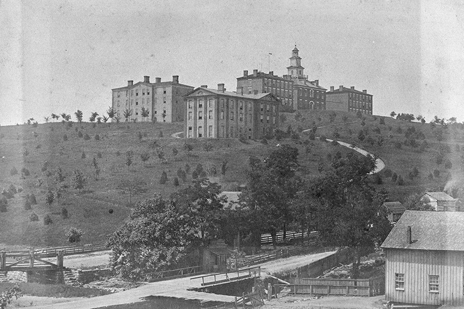
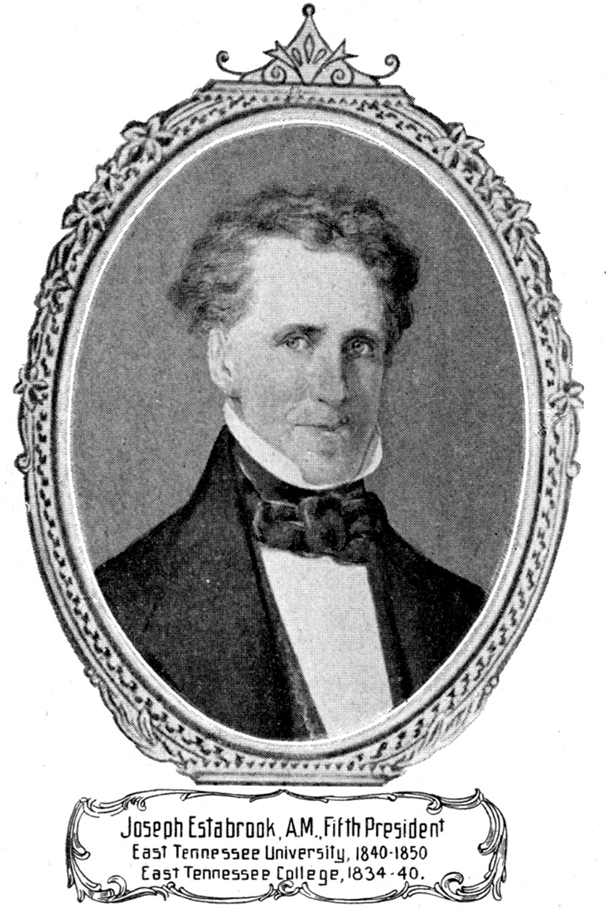
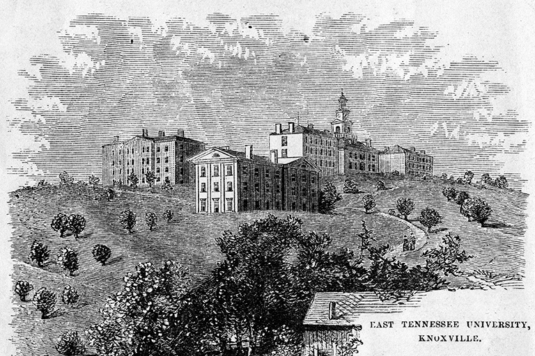
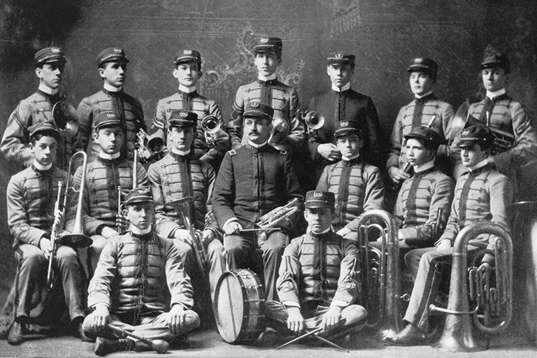
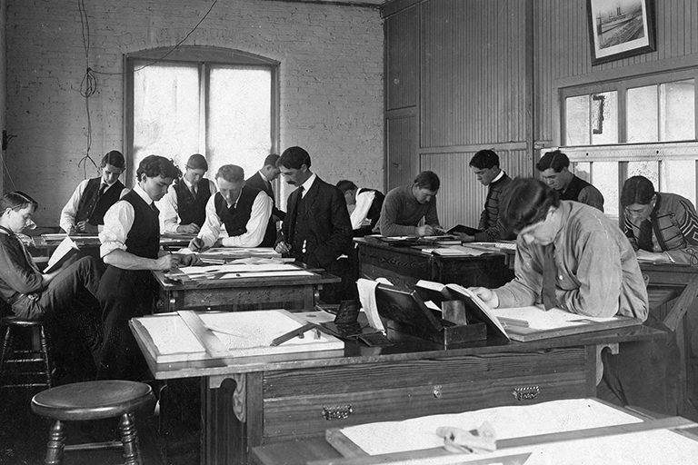
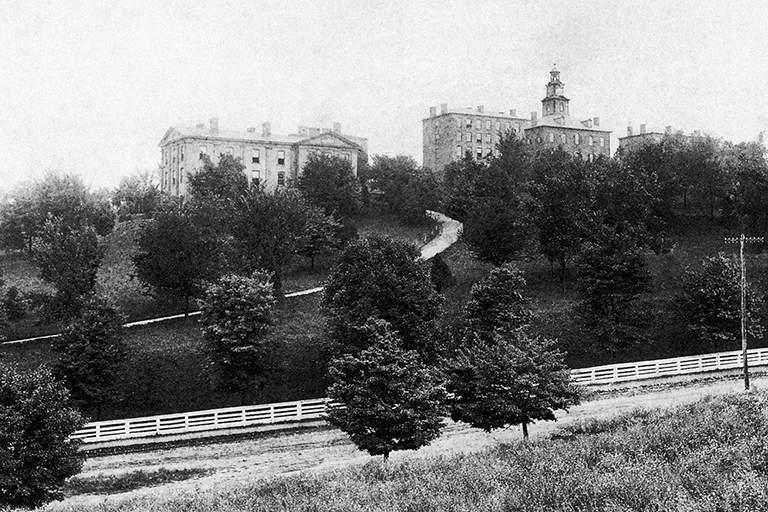
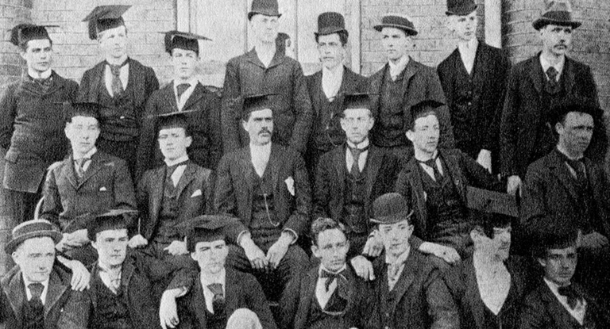
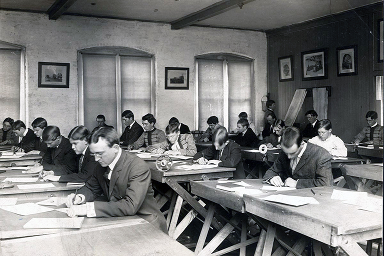
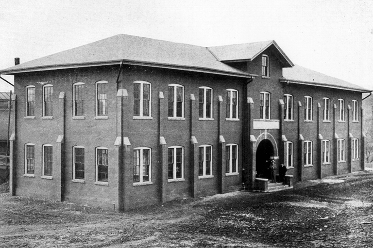

The UT Board of Trustees purchases “the Hill.” About the new location, the Trustees wrote, “The shape of the Hill, the commanding view from it and to it in every direction, the excellence of the water, its distance from the town, being near and yet secluded, its position between the river and main western road ... together with its unquestionable healthfulness, render it a scite [sic] as eligible, almost, as the imagination can conceive.”

Joseph Estabrook, a man of strong scientific interest and background, becomes the president of East Tennessee College. Estabrook hires a group of distinguished professors to provide instruction in chemistry, geology, mineralogy, trigonometry, and civil engineering. Surveying is offered as a subject for the first time. The student body nearly doubled during his administration, growing from 95 to 169.

President Joseph Estabrook was instrumental in persuading the state legislature to change the institution’s name from East Tennessee College to East Tennessee University. Courses in civil engineering are offered for the first time.

The university is designated as the state’s public land-grant institution in accordance with the Morrill Land Grant Act, signed in 1862 by President Abraham Lincoln. In addition, the East Tennessee University’s band began in 1869 as a corps of cadets. The members primarily played cornets and were often headed by a cadet leader.

The university is organized into three schools: Agriculture and the Organic Arts; Languages and Fine Arts; and Mechanic Arts, Mining, and Engineering, which eventually is renamed the College of Engineering. Courses are offered in mechanical and mining engineering.

The Tennessee State Legislature officially renames East Tennessee University as the University of Tennessee under President Thomas Humes and authorizes the granting of advanced degrees in both civil and mining engineering.

Four-year bachelor’s degrees are offered in civil, mechanical, and mining engineering. The designation as a land-grant institution in 1869 required the university to offer courses in military science. For a short time, the university instituted compulsory military training and uniforms for all students.

The electrical engineering program is established. In the beginning, Charles Perkins, an associate professor of physics and electrical engineering, was the only faculty member teaching a handful of students. In 1907, electrical engineering became its own department, and currently the Department of Electrical Engineering and Computer Science is the largest department in the college.

Estabrook Hall is constructed initially to house the departments of Mechanical Engineering and Mechanic Arts. The building made room for a new power plant in addition to experimental labs. The first mechanical engineering department head, Theodore F. Burgdorf, was appointed.